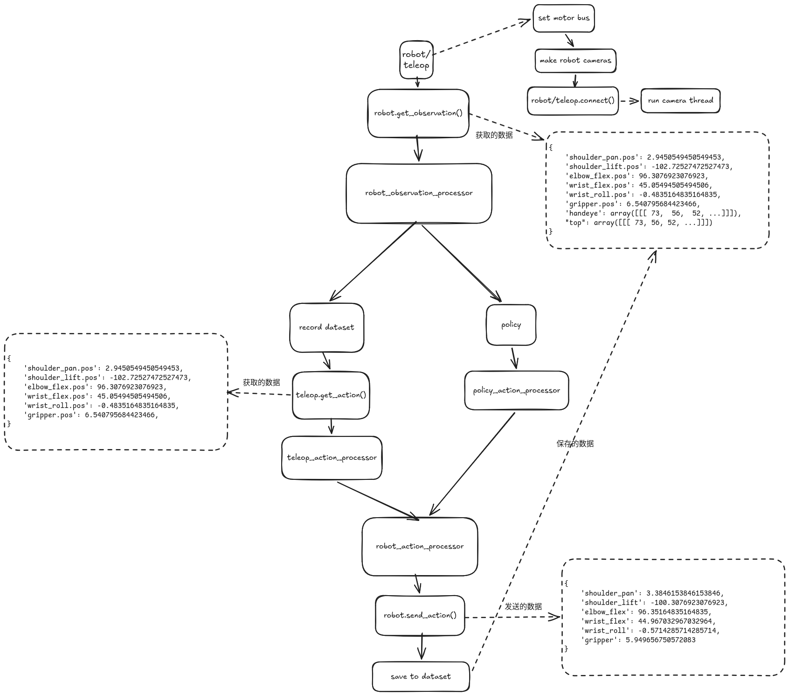

Lerobot
Table of Contents
机器人：SO101，包含从臂和主臂 Lerobot：v0.5.1
1. 查询主从臂的串口号
lerobot-find-port # 先将机械臂串口插入，运行该命令，然后根据提示拔出串口
2. 校准机械臂
校准时， 必须 将所有的关节位置放置在 中位 ，然后键盘的回车键进行校准。
2.1. 校准主臂 (leader)
lerobot-calibrate \ --teleop.id=leader \ --teleop.type=so101_leader \ --teleop.port=/dev/ttyACM0
2.2. 校准从臂 (follower)
lerobot-calibrate \ --robot.id=follower \ --robot.type=so101_follower \ --robot.port=/dev/ttyACM1
2.3. 校准原理
SO101 有 6 个 DOF，每个关节都需要被校准。主要记录每个关节的最小和最大位置。
2.3.1. 电机配置
- range_mins: 电机运动范围的最小值
- range_maxes: 电机运动范围的最大值
- homing_offsets: 归位偏移量，指电机从物理零点位置到校准零点位置的偏移量
| 电机名称 | id | drive_mode | range_mins | range_maxes | homing_offsets | 归一化模式 |
| shoulder_pan | 1 | 0 | 根据实际硬件 | 根据实际硬件 | 根据实际硬件 | degrees |
| shoulder_lift | 2 | 0 | 根据实际硬件 | 根据实际硬件 | 根据实际硬件 | degrees |
| elbow_flex | 3 | 0 | 根据实际硬件 | 根据实际硬件 | 根据实际硬件 | degrees |
| wrist_flex | 4 | 0 | 根据实际硬件 | 根据实际硬件 | 根据实际硬件 | degrees |
| wrist_roll | 5 | 0 | 0 | 4096 | 根据实际硬件 | degrees |
| gripper | 6 | 0 | 根据实际硬件 | 根据实际硬件 | 根据实际硬件 | range_0_100 |
2.4. 归一化原理
读取 电机数据时会进行 归一化 处理， 写入 电机数据时会进行 反归一化
min_ = range_min max_ = range_max bounded_val = min(max_, max(min_, val)) // 电机分辨率 MODEL_RESOLUTION = { "sts_series": 4096, "sms_series": 4096, "scs_series": 1024, "sts3215": 4096, "sts3250": 4096, "sm8512bl": 4096, "scs0009": 1024, }
range_m100_100 模式
norm = (((bounded_val - min_) / (max_ - min_)) * 200) - 100 normalized_values[id_] = -norm if drive_mode else norm
range_0_100 模式
norm = ((bounded_val - min_) / (max_ - min_)) * 100 normalized_values[id_] = 100 - norm if drive_mode else norm
degrees 模式
mid = (min_ + max_) / 2 max_res = self.model_resolution_table[self._id_to_model(id_)] - 1 normalized_values[id_] = (val - mid) * 360 / max_res
3. 遥操作
lerobot-teleoperate \ --teleop.id=leader \ --teleop.type=so101_leader \ --teleop.port=/dev/ttyACM0 \ --robot.id=follower \ --robot.type=so101_follower \ --robot.port=/dev/ttyACM1
4. 查询摄像头
lerobot-find-cameras opencv # --- Detected Cameras --- # Camera #0: # Name: OpenCV Camera @ /dev/video0 # Type: OpenCV # Id: /dev/video0 # Backend api: V4L2 # Default stream profile: # Format: 0.0 # Fourcc: YUYV # Width: 640 # Height: 480 # Fps: 30.0 # -------------------- # # Finalizing image saving... # Image capture finished. Images saved to outputs/captured_images
5. 实时显示画面的遥操作
lerobot-teleoperate \ --teleop.id=leader \ --teleop.type=so101_leader \ --teleop.port=/dev/ttyACM0 \ --robot.id=follower \ --robot.type=so101_follower \ --robot.port=/dev/ttyACM1 \ --robot.cameras="{handeye: {type: opencv, index_or_path: /dev/video0, width: 640, height: 480, fps: 30}, top: {type: opencv, index_or_path: /dev/video2, width: 640, height: 480, fps: 30}}" \ --display_data=true
6. 收集数据
lerobot-record \ --teleop.id=leader \ --teleop.type=so101_leader \ --teleop.port=/dev/ttyACM0 \ --robot.id=follower \ --robot.type=so101_follower \ --robot.port=/dev/ttyACM1 \ --robot.cameras="{handeye: {type: opencv, index_or_path: 0, width: 640, height: 480, fps: 30, fourcc: "MJPG"}, top: {type: opencv, index_or_path: 2, width: 640, height: 480, fps: 30, fourcc: "MJPG"}}" \ --dataset.repo_id=taocheng/so101 \ --dataset.num_episodes=5 \ --dataset.single_task="Pick cube" \ --dataset.streaming_encoding=true \ --dataset.push_to_hub=false
6.1. 收集数据的过程

7. 回放数据
lerobot-replay \ --robot.id=follower \ --robot.type=so101_follower \ --robot.port=/dev/ttyACM1 \ --dataset.repo_id=taocheng/so101 \ --dataset.episode=0
8. 训练
lerobot-train \ --dataset.repo_id=taocheng/so101 \ --policy.type=act \ --output_dir=outputs/train/act_so101 \ --policy.device=cuda \ --wandb.enable=false \ --policy.repo_id=taocheng/so101_act_policy
8.1. 恢复训练
lerobot-train \ --config_path=outputs/train/act_so101/checkpoints/last/pretrained_model/train_config.json \ --resume=true
9. 模型评估
lerobot-record \ --teleop.id=leader \ --teleop.type=so101_leader \ --teleop.port=/dev/ttyACM0 \ --robot.id=follower \ --robot.type=so101_follower \ --robot.port=/dev/ttyACM1 \ --robot.cameras="{front: {type: opencv, index_or_path: 2, width: 640, height: 480, fps: 30}}" \ --dataset.repo_id=taocheng/eval_so101 \ # 录制评估数据集 --dataset.num_episodes=10 \ --dataset.single_task="Pick cube" \ --dataset.streaming_encoding=true \ --dataset.push_to_hub=false \ --policy.path=outputs/train/act_so101/checkpoints/100000/pretrained_model \ # 训练的模型路径 --display_data=true